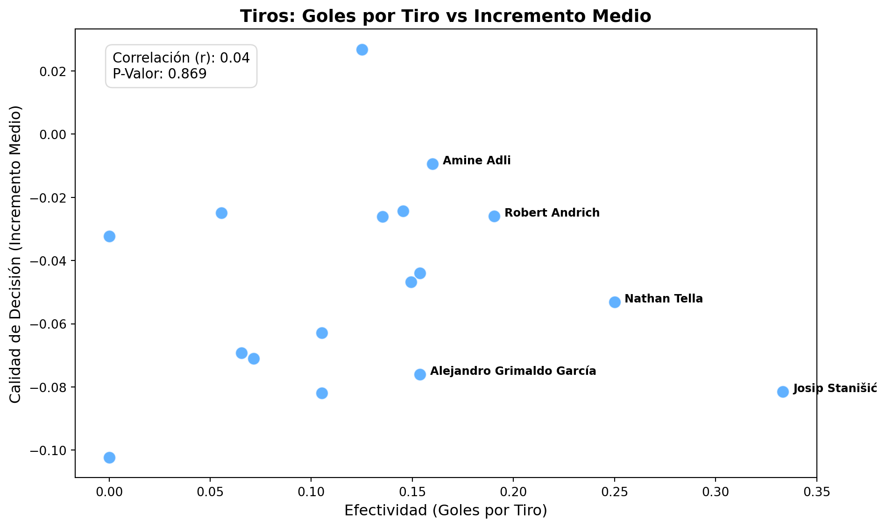
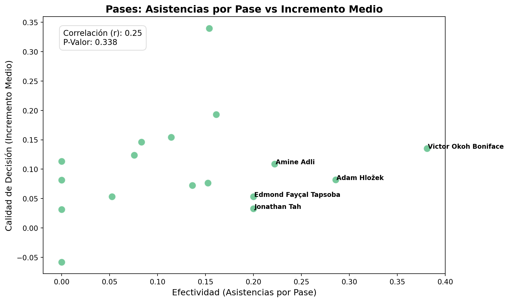
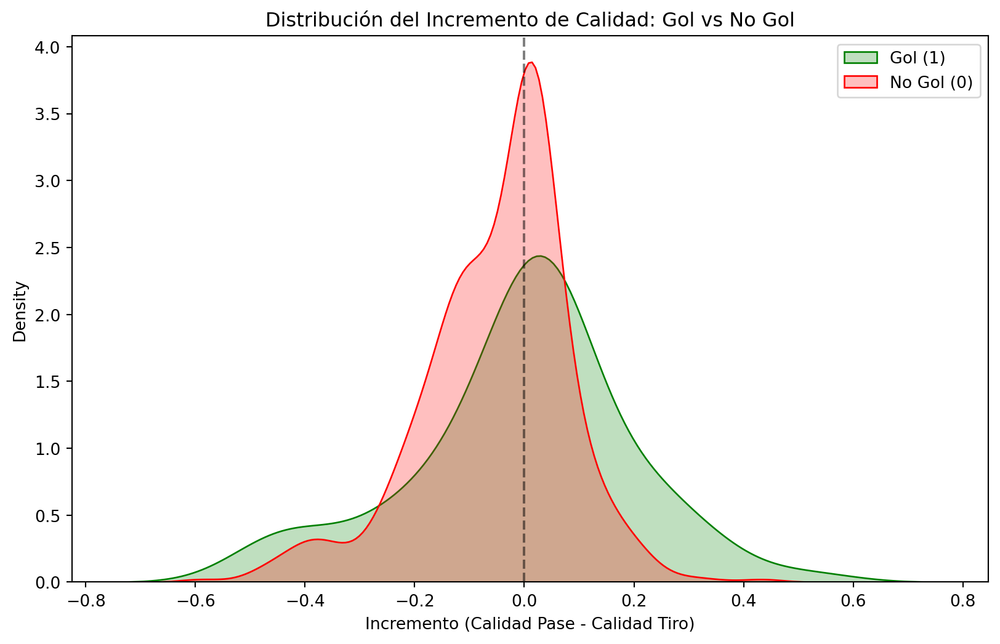

Para comenzar la sección de resultados importamos primeramente los parquets generados durante la sección de metodología.
Ver código
from pathlib import Pathimport pandas as pdPATH_PROCESSED = Path("../data/processed")df_shots = pd.read_parquet(PATH_PROCESSED /"tiros_post_metodologia.parquet")df_passes = pd.read_parquet(PATH_PROCESSED /"pases_post_metodologia.parquet")
4.1 Cálculo del incremento de la probabilidad
Para los análisis que se van a realizar en esta sección, primero obtendremos un nuevo valor llamado incremento, tanto para df_passes, como para df_shots.
Este valor es el resultado de la resta: fórmula base - mejor probabilidad de tiro/probabilidad de pase y tiro.
De esta forma, obtenemos el valor añadido (positivo o negativo) de la toma de decisiones de los jugadores, frente a la mejor opción que tenían en el momento. Se evalúa cómo aumenta o disminuye la probabilidad de marcar un gol, o de dar un pase que acabe en gol según las decisiones tomadas.
Ver código
#Calcular el incremento para los Tirosdf_shots['incremento'] = df_shots['formula_base'] - df_shots['mejor_prob_posible']#Calcular el incremento para los Pasesdf_passes['incremento'] = df_passes['formula_base'] - df_passes['prob_opcion_pase_tiro']print("--- Incremento en Tiros (primeras 5 filas) ---")print(df_shots[['player_name', 'formula_base', 'mejor_prob_posible', 'incremento']].head().to_markdown())
4.2 Recuento de jugadores con incremento positivo/negativo en media
Ver código
# TIROStodos_tiradores = df_shots.groupby('player_name')['incremento'].mean().reset_index()tiros_positivos =len(todos_tiradores[todos_tiradores['incremento'] >0])tiros_negativos =len(todos_tiradores[todos_tiradores['incremento'] <0])total_absoluto_tiradores =len(todos_tiradores)print("--- RECUENTO TOTAL: TIROS ---")print(f"Total de jugadores que han tirado: {total_absoluto_tiradores}")print(f"Suman (Positivo): {tiros_positivos} jugadores ({(tiros_positivos/total_absoluto_tiradores)*100:.1f}%)")print(f"Restan (Negativo): {tiros_negativos} jugadores ({(tiros_negativos/total_absoluto_tiradores)*100:.1f}%)")# PASEStodos_pasadores = df_passes.groupby('player_name_pass')['incremento'].mean().reset_index()pases_positivos =len(todos_pasadores[todos_pasadores['incremento'] >0])pases_negativos =len(todos_pasadores[todos_pasadores['incremento'] <0])total_absoluto_pasadores =len(todos_pasadores)print("\n--- RECUENTO TOTAL: PASES ---")print(f"Total de jugadores que han pasado: {total_absoluto_pasadores}")print(f"Suman (Positivo): {pases_positivos} jugadores ({(pases_positivos/total_absoluto_pasadores)*100:.1f}%)")print(f"Restan (Negativo): {pases_negativos} jugadores ({(pases_negativos/total_absoluto_pasadores)*100:.1f}%)")
--- RECUENTO TOTAL: TIROS ---
Total de jugadores que han tirado: 176
Suman (Positivo): 80 jugadores (45.5%)
Restan (Negativo): 96 jugadores (54.5%)
--- RECUENTO TOTAL: PASES ---
Total de jugadores que han pasado: 144
Suman (Positivo): 126 jugadores (87.5%)
Restan (Negativo): 18 jugadores (12.5%)
Ver código
del todos_pasadores, todos_tiradores, pases_negativos, pases_positivos, tiros_negativos, tiros_positivos, total_absoluto_pasadores, total_absoluto_tiradores
4.3 Ránking de jugadores por media de incremento durante la temporada
A continuación, vamos a calcular el Top 10 de jugadores del Bayer Leverkusen respecto a su incremento/decremento de la oportunidad de gol durante toda la temporada. Para ello:
Ver código
df_shots = df_shots[df_shots['team_name'] =='Bayer Leverkusen']df_passes = df_passes[df_passes['team_name_pass'] =='Bayer Leverkusen']df_shots['gol'] = (df_shots['shot_outcome_name'].astype(str).str.strip().str.lower() =='goal').astype(int)df_passes['gol'] = (df_passes['shot_outcome_name_shot'].astype(str).str.strip().str.lower() =='goal').astype(int)ranking_incremento_tiros = df_shots.groupby('player_name').agg( total_tiros = ('player_name', 'count'), total_goles = ('gol', 'sum'), incremento_medio= ('incremento', 'mean'))# Filtramos jugadores con menos de 5 tiros en toda la temporadaranking_incremento_tiros = ranking_incremento_tiros[ranking_incremento_tiros['total_tiros'] >4]ranking_incremento_tiros= ranking_incremento_tiros.sort_values(by='incremento_medio', ascending=False)print("TOP MEJORES DECISORES DEL BAYERN LEVERKUSEN")print(ranking_incremento_tiros.head(10).to_markdown())
Observamos que el único jugador en positivo es Jonathan Tah. Este jugador, consigue, en media, durante la temporada, un incremento medio positivo. Por lo tanto, Jonathan Tah se considera el mejor decisor del Bayern Leverkusen de la temporada 23-24 ya que en media, sus decisiones de tiro eran las mejores en el momento exacto del disparo.
Ver código
ranking_incremento_tiros= ranking_incremento_tiros.sort_values(by='incremento_medio', ascending =True)print("TOP PEORES DECISORES DEL BAYERN LEVERKUSEN")print(ranking_incremento_tiros.head(10).to_markdown())
Respecto a los peores decisores, destaca Tapsoba, que realizó 12 tiros durante la temporada logrando un incremento medio negativo de un 10% aproximadamente. Por lo tanto, se puede concluir que dicho jugador fue considerablemente el que peores decisiones tomaba en cuanto a tiro en el vestuario del Leverkusen.
Una vez realizado el ránking para los tiradores, vamos a evaluar la calidad de la toma de decisión de los asistentes previos a un tiro, con el objetivo de revisar si esta decisión fue la mejor en el momento del pase.
Ver código
ranking_incremento_pases = df_passes.groupby('player_name_pass').agg( total_pases = ('player_name_pass', 'count'), total_asistencias = ('gol', 'sum'), incremento_medio= ('incremento', 'mean'))# Filtramos jugadores con menos de 5 tiros en toda la temporadaranking_incremento_pases = ranking_incremento_pases[ranking_incremento_pases['total_pases'] >4]ranking_incremento_pases= ranking_incremento_pases.sort_values(by='incremento_medio', ascending=False)print("TOP MEJORES DECISORES DEL BAYERN LEVERKUSEN. PASES")print(ranking_incremento_pases.head(10).to_markdown())
Observamos que Nathan Tella, con 13 pases clave durante la temporada fue el mejor pasador clave que tuvo el equipo, ya que incrementaba la probabilidad de gol hasta en un 33% los pases que realmente realizó, considerándose así uno de los jugadores con mejor capacidad de toma de decisión en ese momento del juego.
Grimaldo, Frimpong, Stanisic, Boniface, Hofmann y Kossonou también logran un incremento medio mayor del 10%, lo que los sitúa como buenos decisores en el paso previo a un tiro.
Ver código
ranking_incremento_pases= ranking_incremento_pases.sort_values(by='incremento_medio', ascending =True)print("TOP PEORES DECISORES DEL BAYERN LEVERKUSEN. PASES")print(ranking_incremento_pases.head(10).to_markdown())
Respecto a los peores decisores, destacamos a Patrik Schick, que, en media, su incremento es un 5% negativo, es decir, que en media, sus decissiones empeoraban la calidad del tiro en un 5%.
4.4 Ránking de jugadores. Goles/Tiro
Ver código
# Calculamos el ratio y filtramosranking_incremento_tiros['goles_por_tiro'] = ranking_incremento_tiros['total_goles'] / ranking_incremento_tiros['total_tiros']# Ordenamos por los que tienen mejor ratio de golranking_incremento_tiros = ranking_incremento_tiros.sort_values(by='goles_por_tiro', ascending=False)print("\n--- TOP JUGADORES: GOLES POR TIRO E INCREMENTO ---")# Reordenamos las columnas para que se vea claroprint(ranking_incremento_tiros[['total_tiros', 'total_goles', 'goles_por_tiro', 'incremento_medio']].head(10).to_markdown())
Parece no existir una relación entre el incremento de probabilidad y el ratio tiros/goles. Lo vemos en un gráfico:
Ver código
import seaborn as snsimport matplotlib.pyplot as pltfrom scipy.stats import pearsonrr, p_valor = pearsonr(ranking_incremento_tiros['goles_por_tiro'], ranking_incremento_tiros['incremento_medio'])# 2. Creamos la figuraplt.figure(figsize=(10, 6))# 3. Usamos scatterplot en lugar de regplot para quitar la línea y la bandasns.scatterplot(data=ranking_incremento_tiros, x='goles_por_tiro', y='incremento_medio', color='dodgerblue', s=100, alpha=0.7)plt.title('Tiros: Goles por Tiro vs Incremento Medio', fontsize=14, fontweight='bold')plt.xlabel('Efectividad (Goles por Tiro)', fontsize=12)plt.ylabel('Calidad de Decisión (Incremento Medio)', fontsize=12)# 4. Añadimos una caja de texto con la correlación# Usamos transform=plt.gca().transAxes para colocarlo en coordenadas relativas (0 a 1) # y que siempre quede en la misma esquina independientemente de los datostexto_stats =f"Correlación (r): {r:.2f}\nP-Valor: {p_valor:.3f}"plt.text(0.05, 0.95, texto_stats, transform=plt.gca().transAxes, fontsize=11, verticalalignment='top', bbox=dict(boxstyle='round,pad=0.5', facecolor='white', alpha=0.8, edgecolor='lightgray'))# 5. Añadimos el nombre a los 5 mejores tiradores para destacarlostop_tiradores = ranking_incremento_tiros.sort_values(by='goles_por_tiro', ascending=False).head(5)for jugador, row in top_tiradores.iterrows(): plt.text(row['goles_por_tiro'] +0.005, row['incremento_medio'], str(jugador), fontsize=9, color='black', weight='bold')plt.tight_layout()plt.savefig('../img/grafico_tiros.png', dpi=300)plt.show()

Observamos que realmente, no existe una relación entre ambas variables.
4.5 Ránking de jugadores. Pases/Asistencia
Ver código
# Calculamos el ratio y filtramosranking_incremento_pases['asistencias_por_pase'] = ranking_incremento_pases['total_asistencias'] / ranking_incremento_pases['total_pases']# Ordenamos por los que tienen mejor ratio de golranking_incremento_pases = ranking_incremento_pases.sort_values(by='asistencias_por_pase', ascending=False)print("\n--- TOP JUGADORES: ASISTENCIAS POR E INCREMENTO ---")# Reordenamos las columnas para que se vea claroprint(ranking_incremento_pases[['total_pases', 'total_asistencias', 'asistencias_por_pase', 'incremento_medio']].head(10).to_markdown())
Tampoco parece haber relación. Lo comprobamos con una gráfica y el coeficiente de correlación lineal.
Ver código
# 1. Calculamos la correlación de Pearson y el p-valor# (Si tuvieras algún valor nulo (NaN), recuerda usar .dropna() en las columnas antes de esto)r, p_valor = pearsonr(ranking_incremento_pases['asistencias_por_pase'], ranking_incremento_pases['incremento_medio'])plt.figure(figsize=(10, 6))# 2. Usamos scatterplot para quitar la línea de tendencia y la banda de confianzasns.scatterplot(data=ranking_incremento_pases, x='asistencias_por_pase', y='incremento_medio', color='mediumseagreen', s=100, alpha=0.7)plt.title('Pases: Asistencias por Pase vs Incremento Medio', fontsize=14, fontweight='bold')plt.xlabel('Efectividad (Asistencias por Pase)', fontsize=12)plt.ylabel('Calidad de Decisión (Incremento Medio)', fontsize=12)# 3. Añadimos el recuadro con los datos de la correlación en la esquina superior izquierdatexto_stats =f"Correlación (r): {r:.2f}\nP-Valor: {p_valor:.3f}"plt.text(0.05, 0.95, texto_stats, transform=plt.gca().transAxes, fontsize=11, verticalalignment='top', bbox=dict(boxstyle='round,pad=0.5', facecolor='white', alpha=0.8, edgecolor='lightgray'))# 4. Añadimos el nombre a los 5 mejores pasadorestop_pasadores = ranking_incremento_pases.sort_values(by='asistencias_por_pase', ascending=False).head(5)for jugador, row in top_pasadores.iterrows(): plt.text(row['asistencias_por_pase'] +0.001, row['incremento_medio'], str(jugador), fontsize=9, color='black', weight='bold')plt.tight_layout()plt.savefig('../img/grafico_pases.png', dpi=300)plt.show()

Aunque parece haber una suave relación positiva, es demasiado baja con un p-valor demasiado alto. Tampoco hay correlación entre dar más asistencias y tener mejor índice de decisión.
4.6 Hipótesis 1. ¿ Los goles tenían siempre un incremento = 0 o positivo?
Vamos a comparar la distribución del incremento de probabilidad en 2 grupos separados. Los tiros que fueron gol y los que no. Vamos a ver si en los goles, era muy claro o había incluso opciones mejores.
Ver código
import seaborn as snsimport matplotlib.pyplot as pltinc_goles = df_shots[df_shots['gol'] ==1]['incremento']inc_fallos = df_shots[df_shots['gol'] ==0]['incremento']# Visualizar las distribucionesplt.figure(figsize=(10, 6))sns.kdeplot(inc_goles, label='Gol (1)', fill=True, color='green')sns.kdeplot(inc_fallos, label='No Gol (0)', fill=True, color='red')plt.axvline(0, color='black', linestyle='--', alpha=0.5) # Línea en el 0 (decisión neutra)plt.title('Distribución del Incremento de Calidad: Gol vs No Gol')plt.xlabel('Incremento (Calidad Pase - Calidad Tiro)')plt.legend()plt.show()

Ver código
from scipy import stats# Test no paramétrico para comparar las dos distribucionesstat, p_valor = stats.mannwhitneyu(inc_goles, inc_fallos, alternative='two-sided')print(f"P-Valor: {p_valor:.4f}")print(f"Media Incremento (Gol): {inc_goles.mean():.4f}")print(f"Media Incremento (No Gol): {inc_fallos.mean():.4f}")
P-Valor: 0.0023
Media Incremento (Gol): -0.0056
Media Incremento (No Gol): -0.0522
Existe evidencia significativa para determinar que, en los tiros que fueron gol, se estaba tomando, como mínimo, una de las mejores decisiones.
Respecto a los tiros que no acabaron en gol, se observa que en media, habían opciones mejores que aumentaban la probabilidad un 5%.
4.7 Hipótesis 2. ¿Boniface y Wirtz registran mejores datos sobre incremento de la calidad de la ocasión?
Respecto a esta segunda hipótesis, ya ha sido validada al revisar los datos sobre los mejores tiradores. No.